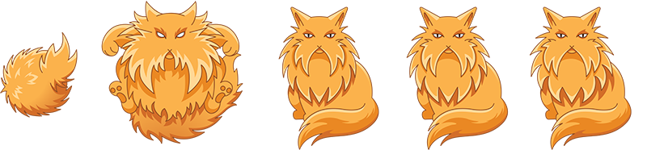
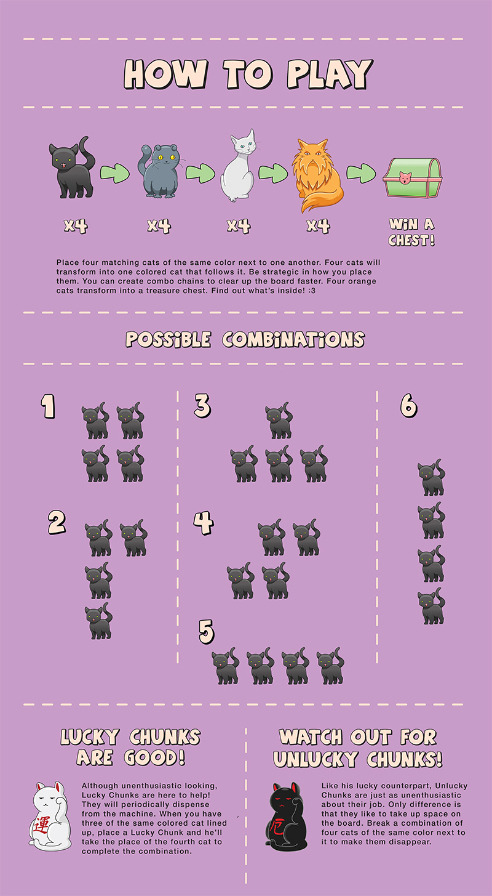
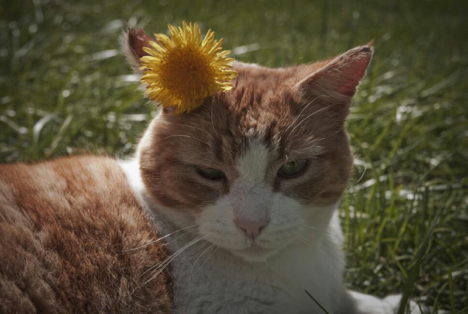
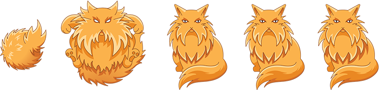
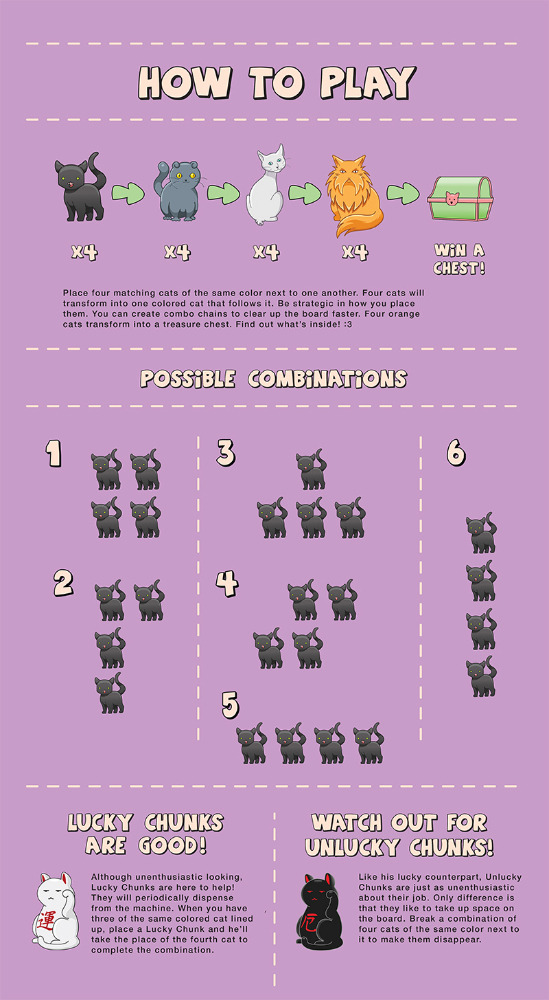
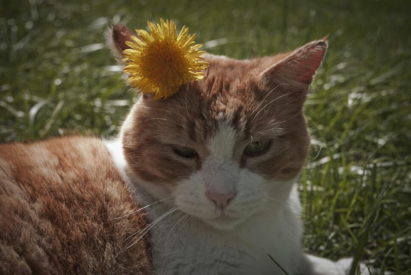

MARY CHAPP
Design & Illustration
I like playing video games. I’ve played them since I was a kid. The ones that stick out most to me are the ones with great stories, amazing artwork and immersive worlds. I also like cats. A lot. This project started with those two simple things: I wanted to play a cat game on my tablet that was fun and challenging but also had adorably illustrated cats (this predates games like Neko Atsume, which I am a huge fan of). I am fortunate to have several friends who are avid video games and computer engineers so we teamed up to make something fun. I provided the artwork and they provided the code. Timing could not have been better for it happened to be my senior year of college and I had to present a thesis project. The subject was of my choosing. This personal project became my thesis. But I couldn’t just make the game and call it a day. I needed a purpose behind the game other than pure entertainment. At the time, smartphones were still pretty small in comparison to what they are now and tablets were just the opposite. I looked at my own smartphone and realized that I rarely if at all used it for gaming or watching Youtube videos simply because the screen was too small. One of the questions that came up early on when we were creating this game was: what platform would be running on? At first, I didn’t want it on smartphones due to its small size and that’s how I was able to come up with my thesis project.I would focus on creating the game for both platforms. Once the game was complete, I would test it out by having people play it both on the smartphone and the tablet to see which one they preferred. I also provided additional research from other sources to back my claim up: that people prefer to use tablets over smartphones for app games. As for the game itself, it was simple: furballs are vomited from a cat at the top and travel down a vacuum. They can result in several colors and your job is to make matches of 3 to erase them off the board. However, there are series of blockades that slow you down. The game is always speeding up, so you have to be fast or the vacuum backs up to hazardous levels and you lose. The cat vomiting the kittens into the tube is none other than my family cat Chuckie (a.k.a Chunk). This game is in memory of him. He passed in 2015 at the age of 15.
 




